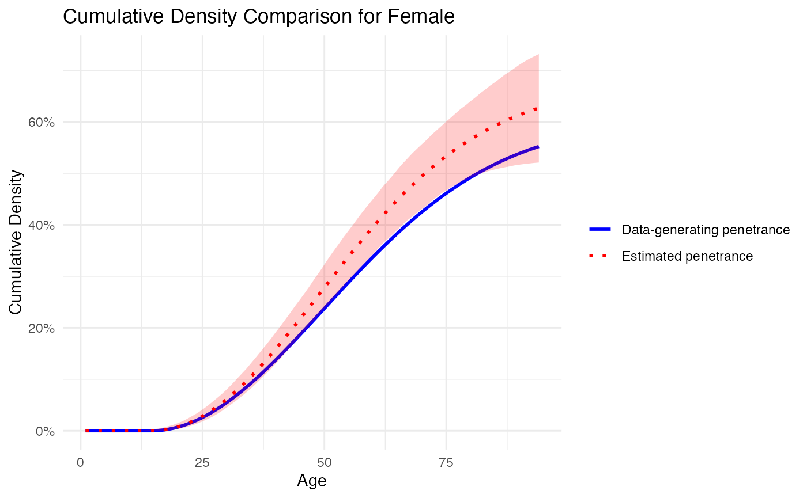

Simulation Study with penetrance
BayesMendel Lab
Source:vignettes/simulation_study.Rmd
simulation_study.RmdGoal
Here we apply the penetrance package to simulated families where the data-generating penetrance function is known and illustrate the estimation of the parameters of the Weibull distribution.
Simulated Data
The data used for the simulation is available as
sim_fam.Rdata. Recall the parameterization of the Weibull
distribution.For the function
we define:
And for the cumulative distribution function :
The data-generating penetrance was constructed using the following parameters for the Weibull distribution.
# Create generating_penetrance data frame
age <- 1:94
# Calculate Weibull distribution for Females
alpha <- 2
beta <- 50
gamma <- 0.6
delta <- 15
penetrance.mod.f <- dweibull(age - delta, alpha, beta) * gamma
# Calculate Weibull distribution for Males
alpha <- 2
beta <- 50
gamma <- 0.6
delta <- 30
penetrance.mod.m <- dweibull(age - delta, alpha, beta) * gamma
generating_penetrance <- data.frame(
Age = age,
Female = penetrance.mod.f,
Male = penetrance.mod.m
)The families were simulated using the PedUtils Rpackage.
dat <- simulated_familiesSimple simulation
Then we run the estimation using the default settings.
# Set the random seed
set.seed(2024)
# Set the prior
prior_params <- list(
asymptote = list(g1 = 1, g2 = 1),
threshold = list(min = 5, max = 40),
median = list(m1 = 2, m2 = 2),
first_quartile = list(q1 = 6, q2 = 3)
)
# Set the prevalence
prevMLH1 <- 0.001
# We use the default baseline (non-carrier) penetrance
print(baseline_data_default)
# We run the estimation procedure with one chain and 20k iterations
out_sim <- penetrance(
pedigree = dat, twins = NULL, n_chains = 1, n_iter_per_chain = 20000,
ncores = 2, baseline_data = baseline_data_default , prev = prevMLH1,
prior_params = prior_params, burn_in = 0.1, median_max = TRUE,
ageImputation = FALSE, removeProband = FALSE
)Comparison of estimated curves vs. data-generating curves
We then plot the respective penetrance curves from the data-generating distribution defined above and the penetrance curves (including credible intervals) from the estimation procedure.
# Function to calculate Weibull cumulative density
weibull_cumulative <- function(x, alpha, beta, threshold, asymptote) {
pweibull(x - threshold, shape = alpha, scale = beta) * asymptote
}
# Function to plot the penetrance and compare with simulated data
plot_penetrance_comparison <- function(data, generating_penetrance, prob, max_age, sex) {
if (prob <= 0 || prob >= 1) {
stop("prob must be between 0 and 1")
}
# Calculate Weibull parameters for the given sex
params <- if (sex == "Male") {
calculate_weibull_parameters(
data$median_male_results,
data$first_quartile_male_results,
data$threshold_male_results
)
} else if (sex == "Female") {
calculate_weibull_parameters(
data$median_female_results,
data$first_quartile_female_results,
data$threshold_female_results
)
} else {
stop("Invalid sex. Please choose 'Male' or 'Female'.")
}
alphas <- params$alpha
betas <- params$beta
thresholds <- if (sex == "Male") data$threshold_male_results else data$threshold_female_results
asymptotes <- if (sex == "Male") data$asymptote_male_results else data$asymptote_female_results
x_values <- seq(1, max_age)
# Calculate cumulative densities for the specified sex
cumulative_density <- mapply(function(alpha, beta, threshold, asymptote) {
pweibull(x_values - threshold, shape = alpha, scale = beta) * asymptote
}, alphas, betas, thresholds, asymptotes, SIMPLIFY = FALSE)
distributions_matrix <- matrix(unlist(cumulative_density), nrow = length(x_values), byrow = FALSE)
mean_density <- rowMeans(distributions_matrix, na.rm = TRUE)
# Calculate credible intervals
lower_prob <- (1 - prob) / 2
upper_prob <- 1 - lower_prob
lower_ci <- apply(distributions_matrix, 1, quantile, probs = lower_prob)
upper_ci <- apply(distributions_matrix, 1, quantile, probs = upper_prob)
# Recover the data-generating penetrance
cumulative_generating_penetrance <- cumsum(generating_penetrance[[sex]])
# Create data frame for plotting
age_values <- seq_along(cumulative_generating_penetrance)
min_length <- min(length(cumulative_generating_penetrance), length(mean_density))
plot_df <- data.frame(
age = age_values[1:min_length],
cumulative_generating_penetrance = cumulative_generating_penetrance[1:min_length],
mean_density = mean_density[1:min_length],
lower_ci = lower_ci[1:min_length],
upper_ci = upper_ci[1:min_length]
)
# Plot the cumulative densities with credible intervals
p <- ggplot(plot_df, aes(x = age)) +
geom_line(aes(y = cumulative_generating_penetrance, color = "Data-generating penetrance"), linewidth = 1, linetype = "solid", na.rm = TRUE) +
geom_line(aes(y = mean_density, color = "Estimated penetrance"), linewidth = 1, linetype = "dotted", na.rm = TRUE) +
geom_ribbon(aes(ymin = lower_ci, ymax = upper_ci), alpha = 0.2, fill = "red", na.rm = TRUE) +
labs(title = paste("Cumulative Density Comparison for", sex),
x = "Age",
y = "Cumulative Density") +
theme_minimal() +
scale_color_manual(values = c("Data-generating penetrance" = "blue",
"Estimated penetrance" = "red")) +
scale_y_continuous(labels = scales::percent) +
theme(legend.title = element_blank())
print(p)
# Calculate Mean Squared Error (MSE)
mse <- mean((plot_df$cumulative_generating_penetrance - plot_df$mean_density)^2, na.rm = TRUE)
cat("Mean Squared Error (MSE):", mse, "\n")
# Calculate Confidence Interval Coverage
coverage <- mean((plot_df$cumulative_generating_penetrance >= plot_df$lower_ci) &
(plot_df$cumulative_generating_penetrance <= plot_df$upper_ci), na.rm = TRUE)
cat("Confidence Interval Coverage:", coverage, "\n")
}
# Plot for Female
plot_penetrance_comparison(
data = out_sim$combined_chains,
generating_penetrance = generating_penetrance,
prob = 0.95,
max_age = 94,
sex = "Female"
)
## Mean Squared Error (MSE): 0.002250424
## Confidence Interval Coverage: 0.6702128
# Plot for Male
plot_penetrance_comparison(
data = out_sim$combined_chains,
generating_penetrance = generating_penetrance,
prob = 0.95,
max_age = 94,
sex = "Male"
)
## Mean Squared Error (MSE): 0.000929737
## Confidence Interval Coverage: 1